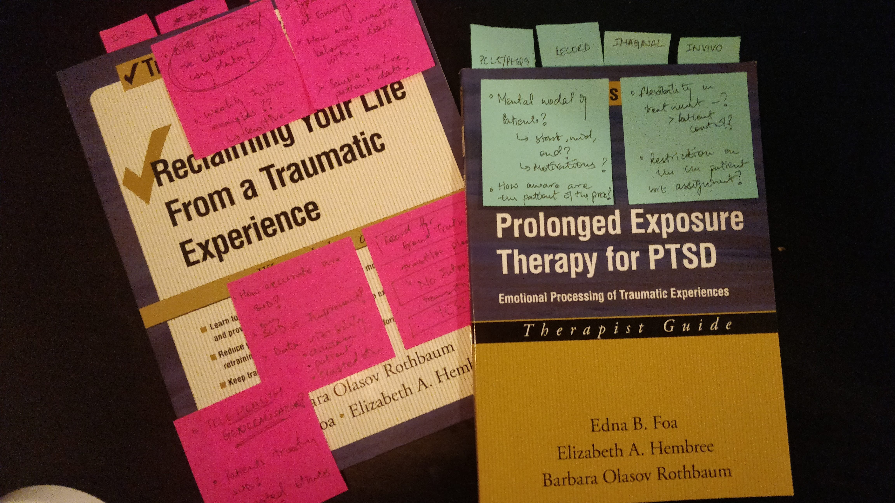
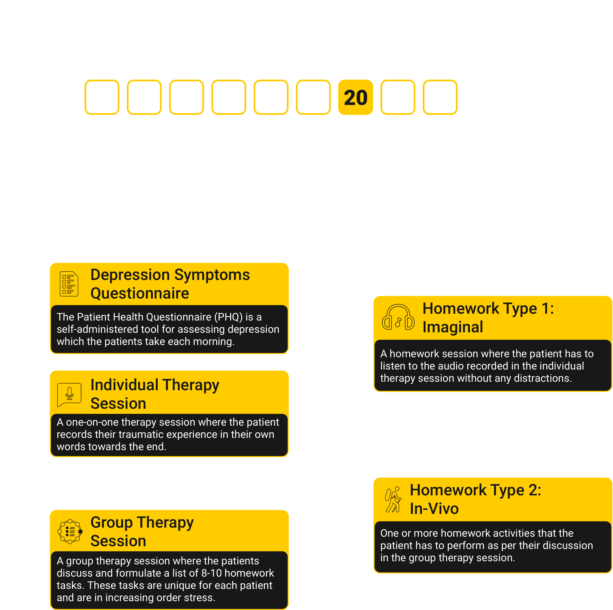
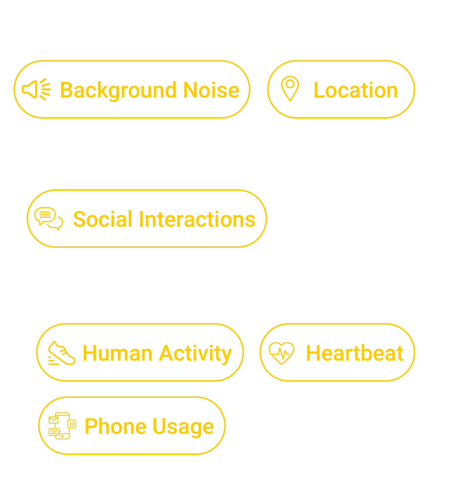
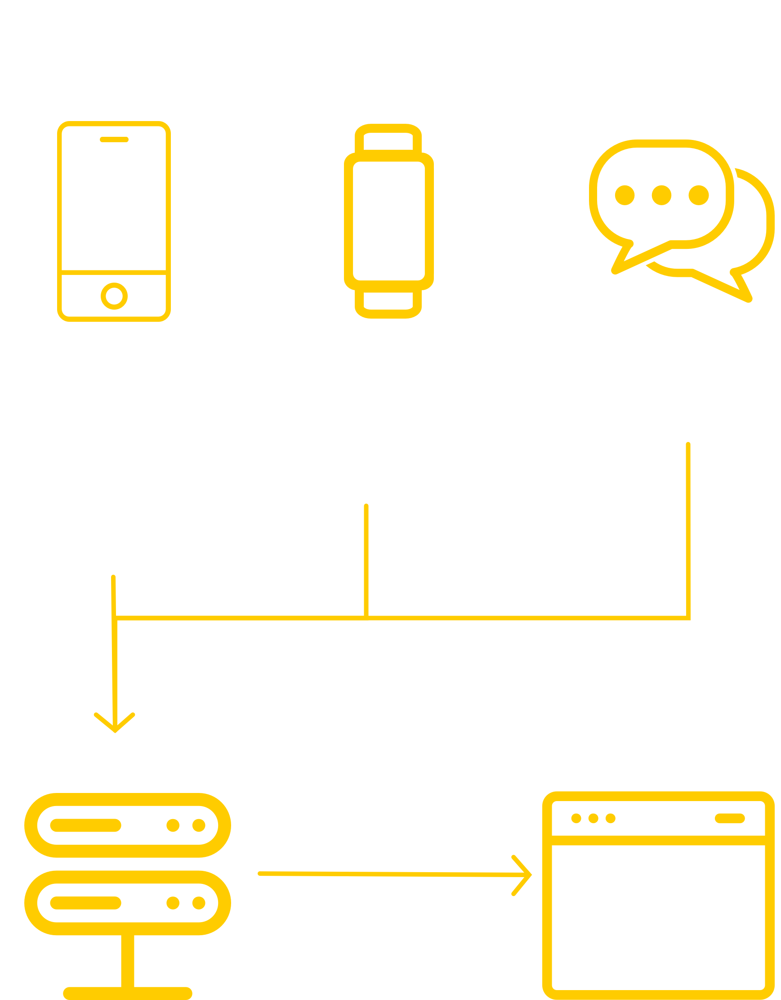
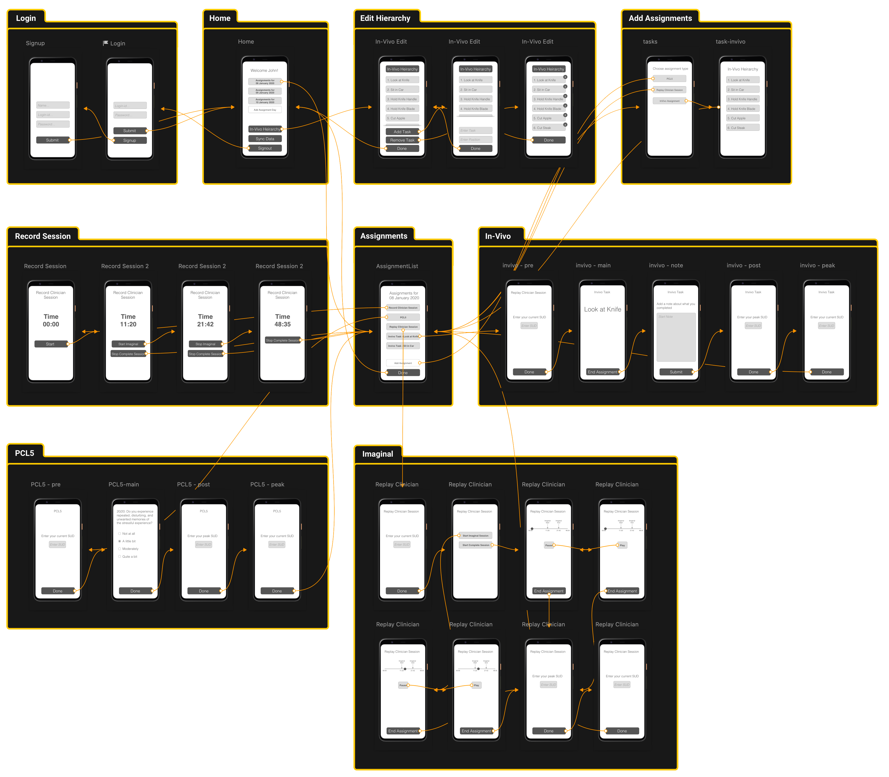
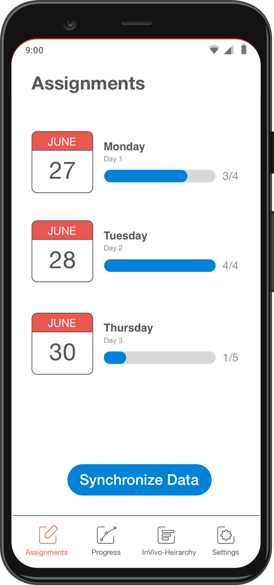
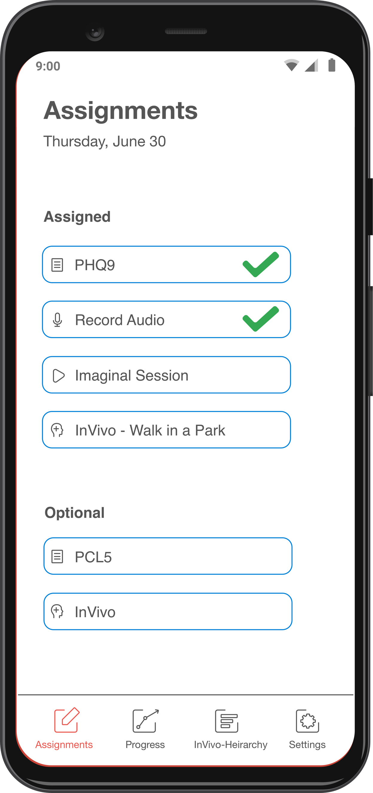

Prolonged Exposure Collective Sensing System (PECSS)
A platform to administer and visualize
patient's progress during PTSD therapy
Outcome
Ongoing Project
Ongoing Project
Role
UX Research,
UX Design,
Android Development
UX Research,
UX Design,
Android Development
Team
Dr. Rosa Arriaga, Catherine Deeter, Hayley Evans, Varnit Jain, Adam Hayward, Dr. Thomas Ploetz, Peter Presti, Dr. Andrew Sherrill, Marcus Wilder
Dr. Rosa Arriaga, Catherine Deeter, Hayley Evans, Varnit Jain, Adam Hayward, Dr. Thomas Ploetz, Peter Presti, Dr. Andrew Sherrill, Marcus Wilder
Tools
Qualtrics, Sketch, Android Studio, Java, JavaScript, Python
Qualtrics, Sketch, Android Studio, Java, JavaScript, Python
National Science Foundation
Principal Investigator: Dr. Rosa Arriaga
Graduate Research Assistantship supported by NSF 1915504 since
August 2019.
Principal Investigator: Dr. Rosa Arriaga
Timeline (Aug '19 - Present)
Research
6 months
Generative research with clinicians and veterans
6 months
Generative research with clinicians and veterans
Design
2 month
Designing the patient-facing application interface
2 month
Designing the patient-facing application interface
Android Development
10 months
Completed the development of the first version of the HIPAA-compliant PECSS application
10 months
Completed the development of the first version of the HIPAA-compliant PECSS application
Context
Post Traumatic Stress Disorder (PTSD) is a chronic
condition marked by considerable distress and dysfunction.
Among the many pharmacological and psychotherapy approaches that have been
used to treat PTSD, Prolonged Exposure (PE) therapy has the best evidence for
therapeutic efficacy.
"However, the delivery of PE Therapy has
been constrained by data collected from patient self-report and
clinician intuition. This data is subjective and narrow, functioning
as an ever-present obstacle in the practice, training, and
psychotherapy delivery."
Clinicians who treat mental illness are in urgent need of
methods, tools, and data to efficiently track, assess, and respond
to mental health needs throughout the treatment process.
Similarly, patients need tools that provide feedback to optimize their
therapeutic exercises.
"We propose to transform mental health assessment and care through
enhancing these clinical practices with data-driven approaches."
I joined this project in August 2019, when I joined the Ubicomp Lab
as a Graduate Research Assistant with Dr. Rosa Arriaga.
My work focuses on designing and developing the
patient-facing application. We are collaborating with Emory University
for PE Therapy expertise and Rochester University for Natural
Language Processing. This project is funded by the National
Science Foundation (NSF).
Research
1. Understanding the Prolonged Exposure (PE) Therapy
The first step in understanding the PE Therapy was to read through
the PE manuals used by therapists. The treatment and manuals are designed
for use by a therapist familiar with cognitive behavior therapy and (CBT)
or who underwent intensive workshops for prolonged exposure by experts in
this therapy. The manual guides therapists and counselors to implement this
brief CBT program that targets PTSD following various types of trauma.

Even though the therapy followed by each patient undergoing PE therapy is
unique in some way, there is a lot of structure that has to be followed by
the clinicians. After reading the manual, guide,
and workbooks, I was able to formulate a standard PE workflow.
A typical PE therapy lasts 9 days and here is a day in the life
of a patient.

After understanding the PE workflow, I asked our primary contact at Emory
University, a clinical psychologist who works with PTSD patients,
if they used any existing technology for Prolonged Exposure Therapy -
PE Coach. They told me that PE Coach (existing mobile
phone application) had helpful features but was not used.
So, I decided to investigate why.


2. The Outpatient Program at Emory
Even though I understood the basics of PE Therapy,
there were some gaps in my knowledge. It was
important to understand the specifics of the Outpatient Program
at Emory. I conducted 3 semi-structured interviews with clinical
psychologists who treat PTSD patients using PE therapy daily.
I enquired about the following:
| # | Line of Questioning | Purpose | Summary of Answers |
|---|---|---|---|
| 1 | Feature Prioritization | To determine the features necessary (high development cost) for PE therapy and add data collection. |
Necessary Features
|
| 2 | Data Transparency | To know about the different levels of data visibility for patients and clinicians. | There should be complete data visibility for both patients and clinicians. |
| 3 | Homework Determination | To understand who can assign homework to a patient | At Emory, the patients control their therapy so both the patients and the clinicians can assign homework. |
| 4 | Time Dependency | To understand how the hour of completion of an assignment affects the therapy | The patient should have the flexibility to complete the assignment at any hour, but the system should know and display when it was completed. |
| 5 | Homework Flexibility | To determine how if the application should impose various restrictions on the patient | The system should impose minimum restrictions and provide as much control/flexibility to the patient as possible. |
| 6 | Audio Management | To discuss how data should be stored and accessed on a mobile phone device | The data has to be encrypted in storage and transfer. There will be no audio transfer because the cost of data infilteration/loss is too high. |
3. Themes
After concluding my research,
I used affinity modeling to combine
the information and found 4 common themes.
SAFETY
The patients should feel safe while enrolled in the therapy.
TRANSPARENCY
The patients should be aware of the therapy process and
should have complete access to all their data.
FLEXIBILITY
The patients can choose to complete assigned homework and can
undertake previous or future tasks whenever they want.
CONTROL
The patients choose and assign their homework according
to their comfort levels.
Design
1. System Architecture
I knew we needed to augment the PE Therapy using data so I tried to capture
data from all facets of the patient's life without introducing any privacy
concerns. The PECSS system encourages patients to share all data streams but
they can choose to opt-out of as many data streams as they want.
All the data captured is encrypted and not available to anyone except
the patient and the clinician.

It is important to note that the data is captured only
during the homework session. The architecture below describes
how each data is collected and displayed.
The patient is
encouraged to use their smartphone and we provide them with a
Fitbit to capture biological data. They also receive login
details to a smartphone app to manage their therapy and the
same login details can be used to view their progress on the dashboard.

2. Low-Fi
In terms of UI design, my job is to create the patient-facing
interface for managing their therapy, i.e. the smartphone application.
Based on all my previous research,
I created the following Low-Fidelity Mockups.

I used to Mockups to conduct 4 remote think-aloud sessions
with experienced psychologists across the United States.
The tasks for these sessions were chosen to cover all the functionalities
of the application. After the session, they were asked a series of
questions concerning PE Therapy in their particular hospitals/centers.
Here are the combined notes from 1 out of the 9 tasks
that the clinicians were asked to perform:
| Task | Feedback | Impact | Category |
|---|---|---|---|
| Perform an Imaginal Homework | Scrubbing is a good feature and should be included | Improves flexibility | Positive Feedback |
| Can scrub times be noted? | Give clinicians more insight into patient's activity | Think About | |
| Add Session # in the title | prevent users from going into the wrong session | Immediate Change | |
| Simple and easy flow | Usability | Positive | |
| SUD values- need to be from 0-100, sliders and discrete options aren’t recommended, a simple number input would work best | Ease of entering SUD values | Need More Data | |
| The scrubbing option is not clear | Decrease Flexibility | Immediate Change | |
| The option to choose imaginal/complete is really nice | Increase Control | Positive Feedback | |
| A traditional media player feel might be more helpful | Increases Affordance | Immediate Change | |
| Fast Forward? Rewind? Skip by 10 secs? | More features | Think About |
3. High-Fi
I received highly targetted feedback from clinicians on my
first iteration, which has been crucial in helping me design the
high fidelity version. This version will be tested with PTSD patients
in Fall 2020. Here are some screens from the final
design direction.


Development
I have been working on 3 core components in terms of development.
While developing these features, it is important to note that all
the data we collect should be secured on their device, during
transfer, and the server.
| # | Component | Purpose | Language | Platform/API | Lines |
|---|---|---|---|---|---|
| 1 | Android Application | The app is used by the patients to manage their therapy - Login, Add/View/Perform assigned homework, and upload data. It uses native phone sensors to collect user data, secure it using AES, and then upload it to the server using HTTPS. | Java, SQL | Android Studio | 5,000+ |
| 2 | SMS | The patient provides phone numbers of 2-3 people close to them, we send them automated SMS texts to ask about their interaction with the patient. | Python, SQL | Twilio API | 200+ |
| 3 | Fitbit | The Fitbit is used to collect biological markers of stress such as heartbeat, movement, etc. | Python | Fitbit API | 100+ |
If you would like to know more about this project,
reach out to me at [varnit@gatech.edu] or
[LinkedIn] .